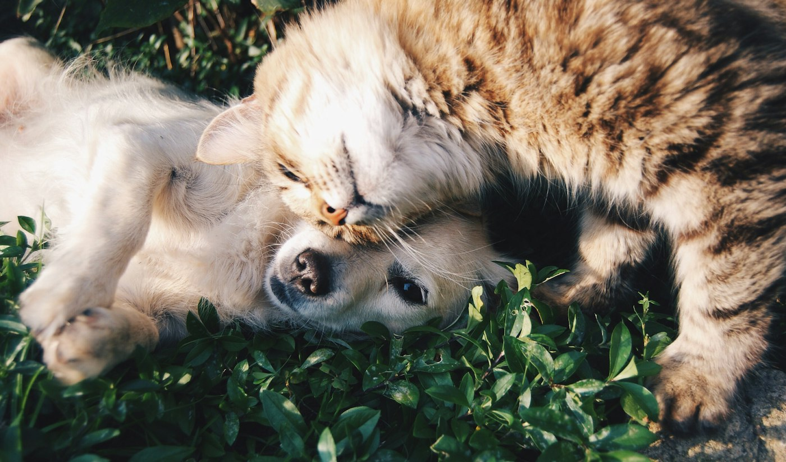

Selected work
VetBM — Велика Ведмедиця
Netzwerk veterinärmedizinischer Kliniken in Kiew. Öffentlicher Auftritt, Inhalte, Struktur.
Arbeit seitens KLARWERK, soweit sie diesen Case trägt:
Website recovery Security hardening Rebuild Performance / Struktur
Keine Umsatz-, Lead- oder Conversion-Zahlen. Der Case beschreibt Technik und Wiederherstellung, nicht Marketing-Theater.